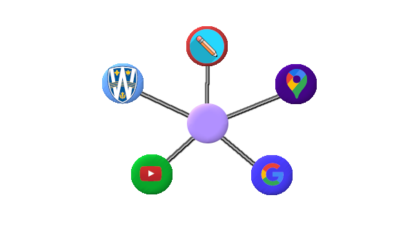
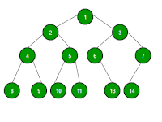

Here is an imagemap leading to various sites as nodes. Using the imagemap tool from GIMP, an imagemap
file can be made. By changing the extension, the HTML code can be found and then copied and pasted over
to this file for use. In this imagemap, circular areas are made for the cursor to click on go to their
respective links. The same tool can be used for any shaped areas for links. Other image mapping tools
can be found by searching Google.

Here is another imagemap where each node of the binary tree data structure leads to links for various data structures and algorithms.
Their operations can be expressed in the Big O notation, where it shows the upper bound of each algorithm's runtime and how fast it grows over time. Some of the
included sorting algorithms are Bubble Sort (an O(n2) time complexity algorithm), MergeSort(an O(nlogn) time complexity algorithm),
CountingSort (an O(n) time complexity when the elements range from 1 to N, where N is the largest number), QuickSort(a worst-case O(n2) and
an average O(nlogn) algorithm), and InsertionSort (an O(n2) algorithm). Some search algorithms included are binary search (an O(nlogn) algorithm)
and linear search (an O(n) algorithm). Some data structures are linked lists (a linear list using nodes; can be singly or doubly linked), HashMaps
(mapping one element to another element), sets (listing of elements), stacks (a last-in, first-out linear list), queues (a first-in, first-out linear
list), and binary trees (each node has data and a child node, listing the data as a hierarchy)